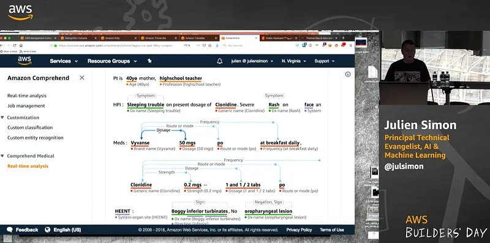

Talk: An overview of Machine Learning Application Services
Here’s a presentation I just did at the AWS Builders Days in Dublin. This is an overview of application services (Rekognition, Polly, etc.), including all the new features from re:Invent 2018 as well as live demos :)

Happy to answer questions. Please follow me on Twitter for more content.